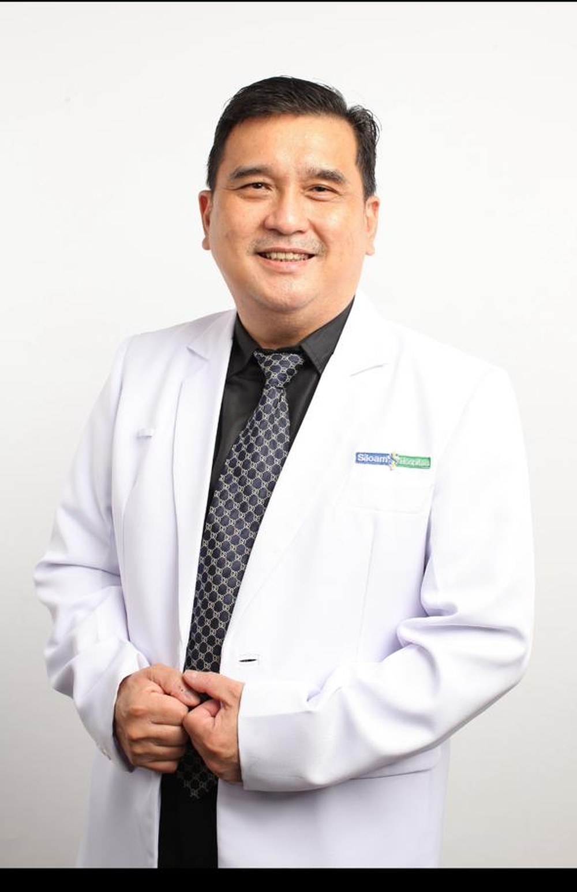
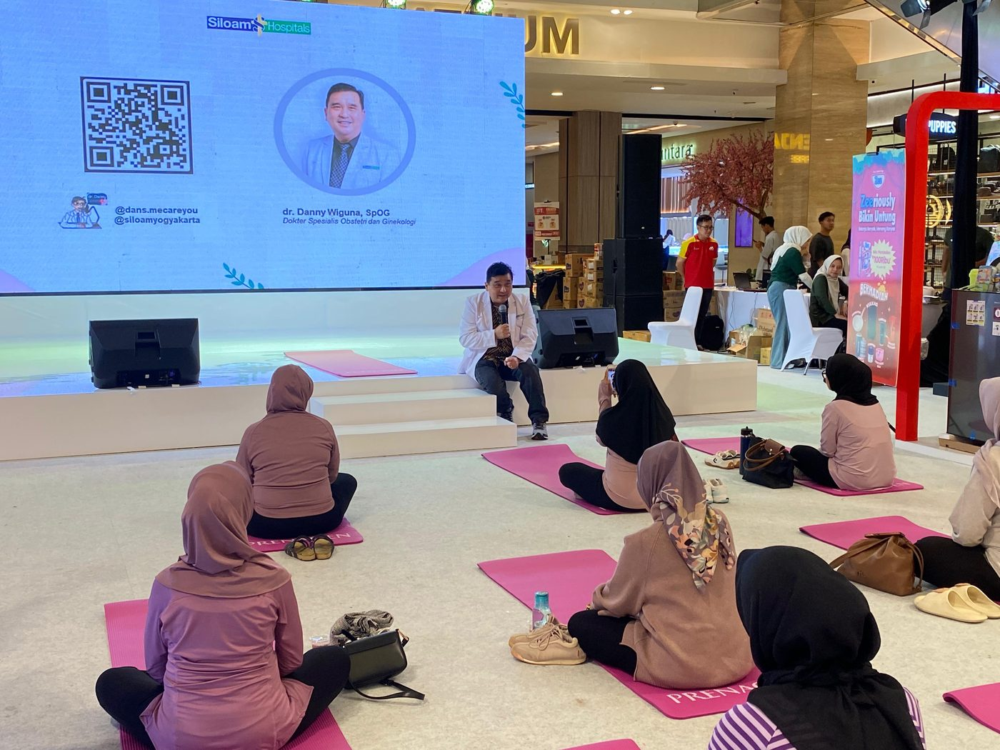
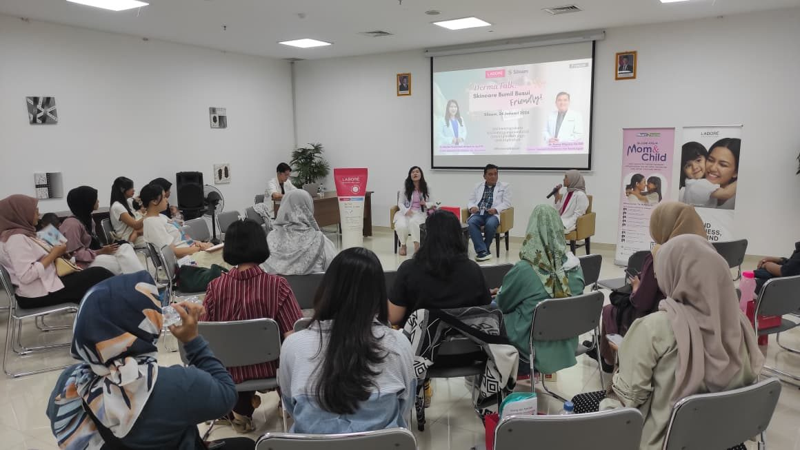
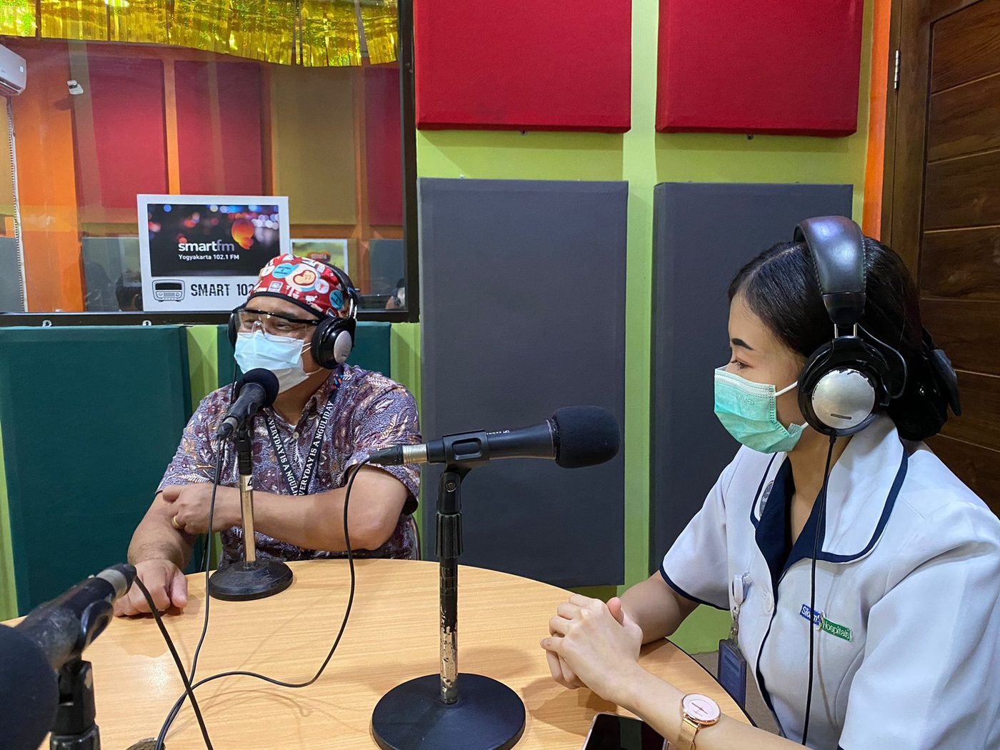
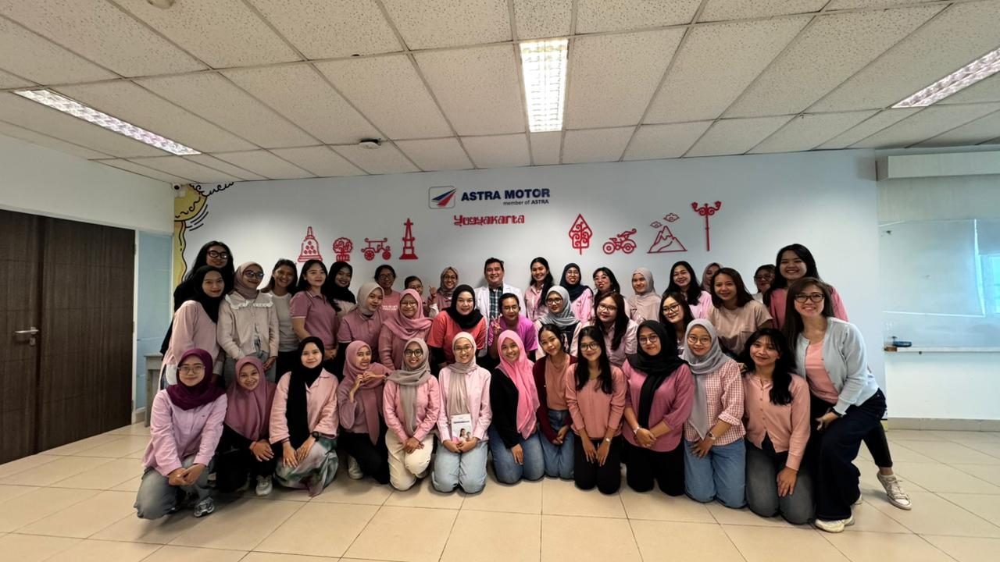
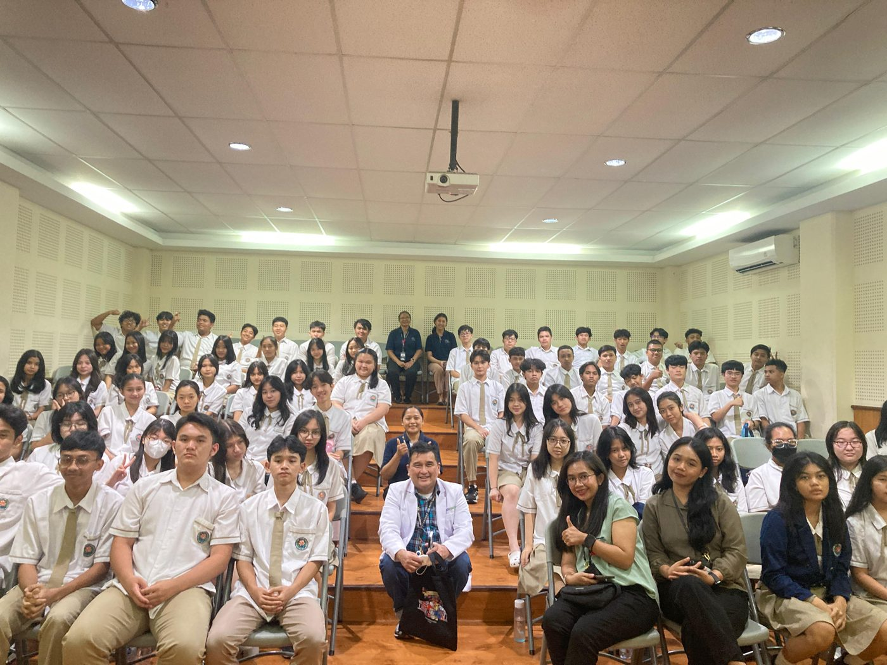
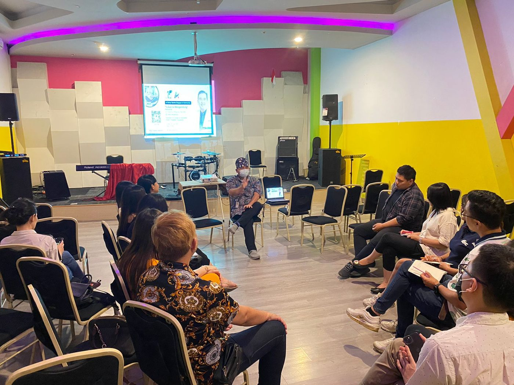
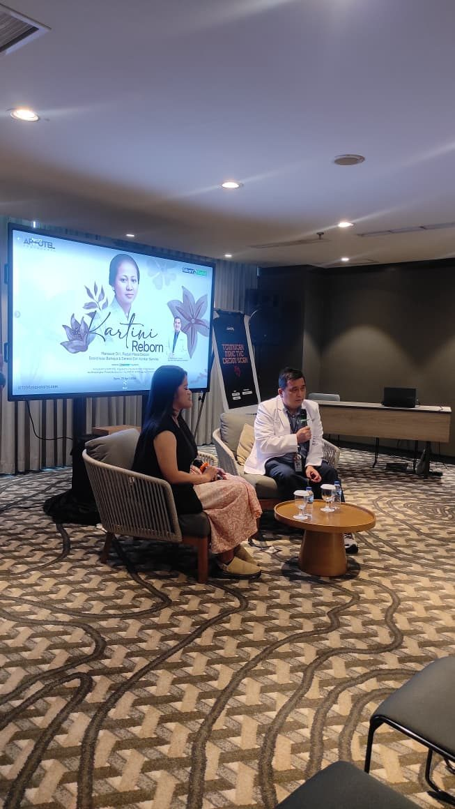
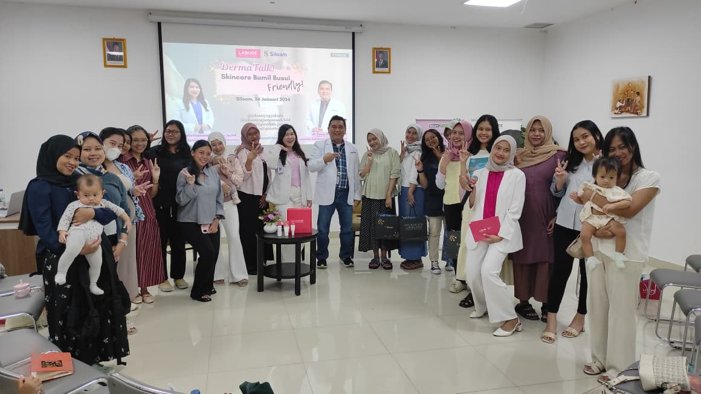

Obstetri & Ginekologi — Yogyakarta
Untuk yang sedang menyiapkan diri, dan yang sudah lama menunggu.
Konsultasi ingin hamil dengan penelusuran faktor risiko dan penguatan gizi sebagai fondasi — dilanjutkan pendampingan kehamilan sampai masa pemulihan setelah melahirkan.

dr. Danny Wiguna, Sp.OG
Dokter Spesialis Obstetri & Ginekologi
Siloam Hospitals Yogyakarta
Fokus utama praktik
Konsultasi Ingin Hamil
Punya anak kini menjadi kebutuhan yang serius bagi banyak pasangan menikah. Sayangnya, kesulitan hamil adalah masalah yang meningkat hampir di seluruh dunia — dan jawabannya sering tidak sesederhana yang diharapkan.
Teknologi kehamilan berbantu seperti inseminasi dan bayi tabung memang terus berkembang. Tetapi biayanya belum terjangkau oleh banyak pasangan, dan angka keberhasilannya berkisar 20–30 persen karena dipengaruhi banyak faktor sekaligus.
Kasus sulit hamil yang tidak diketahui penyebabnya (unexplained infertility). Rentangnya lebar karena sangat bergantung pada selengkap apa pemeriksaan dilakukan.
Kisaran angka keberhasilan program kehamilan berbantu per siklus — bukan jaminan, dan dipengaruhi usia serta kondisi masing-masing pasangan.
Sampai hari ini para ahli masih berlomba mengecilkan angka kasus tanpa sebab itu. Isu daya terima dinding rahim (endometrial receptivity), pengaruh zat oksidatif, peradangan jaringan, dan mikroplastik sudah dipublikasikan luas — di samping faktor klasik yang sudah lama dikenal.
Faktor yang ditelusuri dalam konsultasi
- Berat badan dan status gizi
- Merokok dan minuman beralkohol
- Penyakit menular seksual
- Siklus haid dan gangguannya
- Kelainan bawaan bentuk rahim
- Paparan polutan dan mikroplastik
- Stres fisik maupun psikis
- Penjadwalan hubungan suami istri
- Kualitas dan jumlah sperma
- Kepatuhan jadwal USG dan obat induksi ovulasi
- Penyakit penyerta pada kedua pasangan
- Riwayat program hamil sebelumnya
Mengapa gizi selalu menjadi titik awal
Semua masalah sebaiknya dikembalikan ke akarnya: tubuh manusia bertumbuh sejak dalam kandungan, melewati masa dewasa, kehamilan, sampai menopause dan andropause. Setiap sel yang berkembang dan bertambah banyak pada perempuan maupun laki-laki membutuhkan bahan baku yang sama, dan bahan baku itu adalah gizi.
Karena itu, dalam setiap konsultasi persiapan pernikahan, persiapan hamil, maupun proses kehamilan dan persalinan, dr. Danny selalu bertumpu pada pemenuhan gizi yang optimal — dari sumber yang mudah didapat, bukan yang mahal dan sulit dicari.
Alat bantu penelusuran
USG transvaginal
Melihat kondisi rahim dan indung telur secara lebih jelas dibanding USG perut.
Histeroskopi diagnostik
Office hysteroscopy — melihat langsung rongga rahim dari dalam untuk menemukan kelainan yang tidak terbaca pemeriksaan lain.
Pemeriksaan laboratorium
Hormon, analisis sperma, dan penanda lain sesuai kebutuhan masing-masing pasangan.
Program inseminasi
Program inseminasi sudah berjalan sejak satu tahun terakhir, dan dr. Danny adalah salah satu pelaksananya. Inseminasi menjadi jembatan ketika program hamil alami sudah dicoba namun belum berhasil.
Pilihan ini biasanya dipertimbangkan bila disertai kelainan sperma ringan pada jumlah atau gerakannya, haid yang tidak teratur, vaginismus yang penyebabnya sudah diperbaiki, atau jadwal berhubungan yang sulit diatur karena berbagai alasan.
Perlu dikatakan terus terang: tidak ada program yang bisa menjanjikan kehamilan. Yang bisa dilakukan adalah menelusuri faktor risiko satu per satu, memperbaiki yang masih bisa diperbaiki, dan memilih langkah lanjutan yang paling masuk akal untuk kondisi Anda berdua. Penguatan gizi adalah fondasi, bukan pengganti pemeriksaan medis.
Yang bisa saya dampingi
Enam tahap, satu pendamping yang sama
Banyak ibu berganti-ganti dokter di tengah jalan karena penjelasannya tidak nyambung. Berikut tahap-tahap yang bisa Anda lalui bersama saya, dari sebelum hamil sampai setelah melahirkan.
Merencanakan kehamilan
Konsultasi pra-kehamilan, pemeriksaan kesuburan, pemantauan siklus, dan program hamil untuk pasangan yang sedang menunggu.
Trimester pertama
Konfirmasi kehamilan, USG awal, penanganan mual dan keluhan awal, serta menentukan apa yang aman dan tidak aman dilakukan.
Trimester kedua
USG untuk memeriksa perkembangan organ bayi, skrining risiko, pemantauan berat badan dan tekanan darah ibu.
Trimester ketiga
Posisi bayi, tanda-tanda persalinan, dan diskusi terbuka soal pilihan metode melahirkan — lengkap dengan risiko masing-masing.
Hari persalinan
Pendampingan persalinan normal maupun operasi sesar di Siloam Hospitals Yogyakarta.
Setelah melahirkan
Kontrol pemulihan, keluhan menyusui, pemilihan kontrasepsi, dan menyiapkan tubuh untuk kehamilan berikutnya.
Di luar kehamilan
Kesehatan reproduksi perempuan, di setiap usia
Tidak semua yang perlu diperiksa berhubungan dengan kehamilan. Ini keluhan yang paling sering dibawa pasien ke ruang praktik.
Gangguan haid
Haid tidak teratur, nyeri berlebihan, atau perdarahan di luar siklus.
Keputihan & infeksi
Keputihan yang berubah warna, berbau, atau disertai gatal dan nyeri.
Skrining kanker serviks
Pap smear dan IVA — pemeriksaan singkat yang sering ditunda terlalu lama.
Kista & miom
Pemeriksaan USG, pemantauan berkala, dan pertimbangan tindakan bila diperlukan.
Kontrasepsi & KB
Memilih metode yang cocok dengan kondisi tubuh dan rencana keluarga Anda.
Menopause
Menghadapi perubahan hormon tanpa panik, termasuk keluhan yang jarang dibicarakan.
Di luar ruang praktik
Kesehatan yang dibawa keluar dari rumah sakit
Kelas prenatal di pusat perbelanjaan, seminar untuk karyawan perusahaan, penyuluhan di sekolah, sampai siaran radio. Edukasi paling berguna adalah yang sampai ke orang sebelum mereka jatuh sakit.








Bertanya tanpa harus antre
Dr. Danny Speaks
Obrolan pendek soal kehamilan dan kesehatan reproduksi — pertanyaan yang sering tidak sempat ditanyakan di ruang praktik karena antrean panjang.
Program Siloam Hospitals Yogyakarta
Menatap Tatap
Grup diskusi dan edukasi kesehatan bersama dr. Danny Wiguna, Sp.OG. Ruang untuk bertanya di luar jam praktik, bersama peserta lain yang sedang berada di fase yang sama.
Tempat & jadwal praktik
Di mana dan kapan Anda bisa bertemu
Seluruh praktik berlangsung di Siloam Hospitals Yogyakarta. Jam praktik dibedakan antara pasien mandiri/asuransi dan pasien JKN BPJS.
Siloam Hospitals Yogyakarta
Jl. Laksda Adisucipto No. 32–34, Demangan,Gondokusuman, Kota Yogyakarta 55221
Pasien Mandiri & Asuransi
Langsung datang (walk in)- Senin
- 09.00–13.0014.00–15.0016.00–20.00
- Selasa
- 08.00–14.0016.00–20.00
- Rabu
- 08.00–13.0014.00–15.0016.00–20.00
- Kamis
- 08.30–13.0014.00–15.0016.00–20.00
- Jumat
- 08.30–13.0014.00–15.0016.00–20.00
- Sabtu
- 09.00–15.0016.00–19.00
- Minggu
- 09.00–12.00
Tidak perlu mendaftar lewat aplikasi My Siloam. Silakan datang langsung sesuai jam di atas.
Pasien JKN BPJS
Sesuai ketentuan rujukan- Senin
- 07.00–09.0013.00–14.0020.00–21.00
- Selasa
- 07.00–08.0014.00–15.0020.00–21.00
- Rabu
- 07.00–08.0013.00–14.0020.00–21.00
- Kamis
- 07.00–08.3013.00–14.0020.00–21.00
- Jumat
- 07.00–08.3015.00–16.0019.00–20.00
- Sabtu
- 07.00–09.0015.00–16.0019.00–20.00
- Minggu
- Tidak ada jadwal
Datang sesuai ketentuan dan tanggal kontrol. Bila ada keadaan darurat sebelum tanggal kontrol, hubungi lebih dulu atau datang melalui IGD Siloam Hospitals Yogyakarta.
Cara mendaftar
Pasien mandiri dan asuransi cukup datang langsung tanpa aplikasi. Pasien JKN mengikuti alur rujukan dan tanggal kontrol yang sudah ditetapkan.
Keadaan darurat
Untuk kondisi mendesak di luar jam praktik, gunakan IGD Siloam Hospitals Yogyakarta yang buka 24 jam.
Jadwal diperbarui Juni 2026. Jam praktik dapat berubah sewaktu-waktu mengikuti kebijakan rumah sakit — konfirmasi lebih dulu lewat WhatsApp bila Anda datang dari luar kota.
Ada yang mengganjal soal kandungan Anda?
Kirim pesan dulu untuk menanyakan jadwal dan membuat janji. Pemeriksaan tetap dilakukan langsung — diagnosis tidak bisa ditegakkan lewat chat.